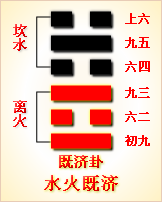

高岛易断 - 19地泽临
高岛易断 19 地泽临
“临
［83］
”字从人从臣从品。人者以君上为尊；臣者以臣民统之；品者，以品类别之。言人君临御天下，统率臣民，品别品类之贤否，而器使之，是谓君临民，尊临卑，上临下也，临又有监守之义，故监字从临省文。又按临卦，《兑》下浸上，《坤》上陵下，下陵过乎上，有密迩切近之形。卦体兑为泽，坤为地，地在泽上，是地临泽也；上四阴，下二阳，阳欲上进，是以阳临阴也，故《彖》辞曰，下悦而依附乎上，上顺而反降乎下。附乎上，自下附上，降乎下，是上莅下，总其象谓临莅也。自有临辞，遂以临为卦名。
临：元亨利贞，至于八月有凶。
▲ 金文临
《临》，《兑》下《坤》上，《兑》，悦也，《坤》，顺也。《坤》曰"元亨"，以顺来也，《临》得《坤》之顺，故亦曰"元亨"，《兑》曰"利贞"，以悦致也，《临》得《兑》之悦，故亦曰"利贞"。"元亨利贞"，四德也，首备于《乾》，《乾》，天也，临民者，宜法乎天，故临亦备此四德。"八月"之说，诸儒纷议，然《易》之道，不外阴阳消长。以辟卦言之，《临》为二月之卦，二月当春仲，阳方长也，八月当秋仲，阳渐消也，阳消阴长，凶道也，故曰"至于八月有凶"。曰"至"者，未至而预防其至之谓也；曰"有"者，未有而预虑其有之谓也。若已至焉，若已有焉，凶既临身，虽欲避之，则已晚矣。圣人以《易》垂诫，期临民者先时杜维，亦即"履霜""坚冰"之意也。万事能有吉而无凶，斯天下可常治矣。
《象传》曰：临：刚浸而长，说而顺，刚中而应，大亨以正，天之道也。至于八月，有凶，消不久也。
"刚"指《兑》下二画，谓初爻、二爻。"浸"，渐也，二阳渐长于下而上进也。内《兑》外《坤》，内悦而外顺也。"刚中"者，谓二爻刚得其中。"应"者谓五爻，得柔之中，以应刚中，是刚柔相应也。"大"即元，"以"即利。凡《彖传》以字，即释利字。卦德备"元亨利贞"者，《乾》《坤》《屯》《随》《临》《无妄》《革》，凡七卦，诸卦四德皆从《乾》六阳来，乾为天，故曰"天之道也"。"浸而长，悦而顺"，是道之得其亨；"刚中而应"，是道之得其正，所谓尽人以合天也。"八月，有凶，消不久也"，盖临当二月，"刚浸而长"，至八月柔浸而长，刚浸而消矣。"不久"者，言方消也，即浸之意。刚而浸长，君子应天而行，乃得"大亨以正"：刚而浸消，君子所当前时而戒，斯能免凶矣。阳长阴消，以天道言，则谓寒暑之往来；以治道言，则谓君子小人之进退。圣人特于《临》卦，反复垂诫，意深哉！
以此卦拟人事，或《临》高而望，或临渊而羡，或临事而惧，或临财，或临难，皆为临也。人事之害，不失于刚，即失于柔，刚之长，能济以柔，柔之长，能济以刚，斯和悦巽顺。刚柔两得，则必万事亨通，百为公正，是人事之至善者也。阴阳消长，天道之循环，固非人力所能挽，而人事之吉凶伏焉矣。浅言之，未寒而不谋其衣，既寒则谋之不及，必致冻矣；未饥而不谋其食，既饥而谋已迟，必致馁矣。推之恶未著时，而不自检摄，则恶必浸增，至恶大而不可复改；邪未盛时，而不自防闲，则邪必浸炽，至邪极而不可复治，皆凶道也。任其欲而纵之，放僻邪侈，盗跖之所以终盗跖；复其性而明之，戒慎恐惧，伯夷之所以终为伯夷。天道之阴阳寒暑，在转移之间，人事之善恶邪正，亦一转移间耳。临卦六爻，惟五爻刚柔得中，称曰"知临"，智则明，能察几，自有先时之吉，斯无后时之凶。人事之所以趋吉避凶，道不外是焉。
以此卦拟国家，六五之君，临御天下，以悦得众，以顺承天，握《乾》而闻《坤》，举直而黜枉，临之以庄，莫不大亨而得正矣。欲以一人临天下，其势难，以天下临天下，其势易，故人君不贵独临，必贵得人以共理，昔舜有五臣，武有十臣，皆是也。此卦六五之君，委任九二，刚柔相济，内悦外顺，察天时之变，度人事之宜，居正以"体元"，"嘉会"以敦"亨"，利用以裕民，"贞固"以"干事"，道足以教育天下英才，德足以容保子孙黎民。以此而临一国，而一国治，以此而临天下，而天下平。而君子不敢自为已治已平也，谓治难而乱易，必于未乱防其乱，谓泰极即否来，必于未否虑其否，此古人感羽翘而绸缪牖户，闻牛喘而调燮阴阳者，盖皆有深虑焉。《临》卦六爻，无一言凶，亦以其能思患预防耳。六爻中五居尊位，可谓聪明睿智，足以有临之圣君；二爻可谓咸有一德之大臣；初爻则行之以正；四爻则至近当位；上爻则敦厚终吉；虽三爻不中，幸其知忧而无咎。一人当阳，群贤荟萃，宜其君明臣良，得以长安而久治也，岂不休哉？
太阳历者，因方今外国交际频繁，沿而用之，至其数月，似于月之盈虚失准。然欧美各邦，古亦用太阴历，故今犹以十二分太阳历之一年，同以月称，是以占断上，数月必据大阴历。《易》以冬至为一月之初，故至一年终始，与太阳历无有大差，故不复附月之解释。
通观此卦，明主在上，为天下大悦之时也。地势卑而下顺，泽水浸而上悦，水土本相亲近，犹人主平易而近民，民皆欢乐而附上也，临之所以为临也。初九、九二，同为"咸临"，泽水自山而下也。初九泽犹未盈，故曰"行"；九二泽水已满，故"无不利"；六三水既及岸，故为"甘"；六四地与水接，故曰"至"；六五地泽正应，有智者乐水之象，故曰"智临"；上六，地愈厚，泽愈深，故曰"敦临"。"咸"者临之速也；"甘"者临之贼也；"至"者临之诚也；"智"者，临之明也；"敦"者，临之久也。"咸临"见其德之能感；"甘临"见其性之过柔；．"至临"见其位之得当；"智临"见其道之克明；"敦临"见其志之笃厚。盖六五之君，不以独临，而能任人，故以"智临"称之。用其"咸"，用其"至"，用其"敦"，而君子之道长；去一"甘"，而小人之道消。阳悦而长，阴顺而消，于是天时正，人事和，上下同德，熙熙皞皞，而天下治矣。是诚临民之极则也。
《大象》曰：泽上有地，《临》。君子以教思无穷，容保民无疆。
上卦之地高，下卦之泽卑，以上临下，故曰《临》。夫临下之道，不外教养二者。《兑》取夫悦，教而能悦，以集其思也；《坤》取夫顺，养而能顺，足以容其众也。教而有思，如泽之浸得其润；容而又保，如地之厚而能载。"无穷"者，泽之长也；"无疆"者，地之广也。又《兑》为口，是以能教；《坤》为腹，是以能容。君子取象泽地，以临万民，教之道在育英才，保之诚如抚赤子，泽普群生，量包一世，斯临治矣。
【占】 问时运：目下作事，恰如一潭活水，流行自在，好运正长。
○ 问商业：泽为货物，地为贩运之地也，得此占，其获利厚而尤远，大吉。
○ 问家宅：此宅必近水泽之乡，家业正旺，财丁两盛，大吉。
○ 问战征：其阵宜临水处，不特一时得胜，且有万民归服之象。
○ 问疾病：其命可保，其病必延久，一时难愈。
○ 问讼事：恐久久不了。
○ 问婚嫁：两姓和合，五世其昌，大吉。
○ 问六甲：生女。
○ 问行人：一时未归。
○ 问失物：在川岸处觅之，保可得也。
高岛易断 初九：咸临，贞吉。
《象传》曰：咸临贞吉，志行正也。
山泽通气之卦，名之曰咸；此卦泽上有地，阴阳之气相感，故初、二两爻，皆曰"咸临"。初居卦之始，其阳犹微，与四相应。四以柔而当位，初以刚而得志，行各得其正，乃能应而进于五，相与得行其道，以佐大君"智临"之治也，故曰"贞吉"。《象传》曰"志行正也"，盖初爻位居其正，是以志之所行，莫不正也。
【占】 问时运：目下新运初交，能守其正，行无不利。
○ 问商业：时当新货初出，市价平正，尽可贩行，无不如志。吉。
○ 问家宅：必是忠厚中正之家，现下适有吉事临门。大利。
○ 问战征：初次临阵，宜从大路进军。吉。
○ 问疾病：病是初起，正气充足，可保即愈。
○ 问婚嫁：门户相当，品行端正，佳偶也。
○ 问讼事：一经临审，即可了结。
○ 问六甲：生男，临盆有喜。
【例】 友人某来，请占气运，筮得《临》之《师》。
断曰：此卦地下有泽，泽者为水所停蓄之处。泽得地而流，地取泽而润，彼此相临，故其卦曰《临》。今足下占得《临》初爻，初与四相应，四近尊位，有贵显之象；但四爻贵显，阴柔而居阴位，势力尚有所缺。足下为初爻，阳而居阳，虽有才智，以无其位，未得行其志。在爻辞曰"咸临"，"咸"感也，两情定相感孚。今为初爻，是初次相见，意气虽投，尚未可望其速行，必俟二爻"咸临"，则无不利矣。必也其在明年也。
于是某敬服而去。
高岛易断 九二：咸临，吉，无不利。
《象传》曰：成临，吉无不利，未顺命也。
此爻成卦之主，以刚中之才，与六五柔中之君，阴阳相应，虽在大臣之位，任官之日犹浅，不保无众阴嫉之也。故直临则必有咎，宜待在上之君长，感我才德，而后临之，然后可得吉也。此爻曰"吉"，曰"无不利"，于六爻中特见赞美，盖初爻以正感，二爻以中感也。《象传》曰"未顺命也"，谓此爻在下体而不当位，故小人未尽从其命也。
【占】 问时运：目下正佳，又得贵人照应，大吉。
○ 问商业：初次既获吉，二次更利。
○ 问家宅：有福星照临之象，前后皆吉。
○ 问战征：再接再励，所向皆吉，但防偏裨中，有不从令者，以致败事。
○ 问婚嫁：咸利，惟属羊者最佳。
○ 问讼事：却不致败，但一时未得顺从。
○ 问六甲：生男，但未产也。
○ 问行人：在外者归期未定。
【例】 友人来，请占某贵显气运，筮得《临》之《复》。
断曰：此卦下之二阳长进，上之四阴衰微，阳者君子，而阴者小人也。君子在位，则国家安宁，万民得福，是临民之善者也。今占得此爻，以九二为贵显，与六五之君位，阴阳相应，谓之"咸临，吉，无不利"，可知某贵显本年之气运大吉。
断曰：此卦下之二阳长进，上之四阴衰微，阳者君子，而阴者小人也。君子在位，则国家安宁，万民得福，是临民之善者也。今占得此爻，以九二为贵显，与六五之君位，阴阳相应，谓之"咸临，吉，无不利"，可知某贵显本年之气运大吉。
【例】 明治二十七年，友人金原明善氏来访，曰：余生长之乡在远州滨松附近，以培植山林为业，近在东京经营银行，家乡旧事，未能兼顾。孙女现已及笄，欲得一配偶，使之相续家督，并可奉事老母，与余妻共归故乡。请占其吉凶如何？筮得《临》之《复》。
断曰：《临》卦下《兑》上《坤》，《坤》为老母，《兑》为小女，又《兑》为悦，《坤》为顺，是老母爱悦少女，少女顺从老母也。今占得二爻，其辞曰"咸临，吉"，二爻与五爻相应，二爻阳居柔位，五爻阴居阳位，恰合赘婿之象。爻辞曰"吉，无不利"，可使速完婚姻，若愆时期，三四两爻，皆不利。明后两年，未可成婚，必以本年为吉。金原氏谢而去。
高岛易断 六三：甘临，无攸利。既忧之，无咎。
《象传》曰：甘临，位不当也。既忧之，咎不长也。
"甘"者，五味之中，为人之所最嗜，为怡乐之义。"甘临"者，谓不能临人以德，而以甘言谄之，必无诚心实意也。三爻近二爻，见二爻未从其命，遂欲巧言求进。究之，言虽甘，而位不当，何利之有？既知其非而"忧之"，反邪归正，去恶从善，则以今日之是，亦足补前日之非，则可以免咎，谓之"既忧之，无咎"也。《象传》曰"位不当也"，以阴居阳，是位之不得其正也；"咎不长也"，幸以其忧之速，故其咎未至于长也。
【占】 问时运：运既不佳，行亦不正，幸能知悔，后运可望。
○ 问商业：店基不得其位，惟贩运糖业则佳。
○ 问家宅：屋运不佳，宜迁徙为吉。
○ 问战征：屯营地位不当，迁营则吉。
○ 问疾病：药不对症，宜进苦辛之剂，无咎。
○ 问婚姻：不合。
○ 问行人：外不得利，近时可归。
○ 问失物：可得。
○ 问六甲：生女，恐难长养。
【例】 明治五年，友人某来，请占某商人气运，筮得《临》之《泰》。
断曰：此卦地上有泽，地《坤》卦，《坤》以生育万物，为母，泽《兑》卦，《兑》以三索得女，为少女，有母女相临之义。《临》三爻曰"甘临"，以阴居阳，位不中正，恰如少女恃宠，以甘言取悦于母，冀专家政。今某商人，占得此爻，知某商人必夙性阴险，"专以机巧取利，一旦得志，便自盈满，如妇人小子之为，何利之有？若能迁改，尚可免咎。
友人曰：甚感《易》理之妙。某商人曾以一步金十钱价格，买横滨吉田新田之沼地若干，后因某豪商为抵当某省寄托金，以一步一元价格买之，以为抵当。故某商人一时占万余元巨利，从此遂生骄慢，轻视众人，其状恰类狂病者。余将对友人详说《易》占之妙，使之转告某商也。
高岛易断 六四：至临，无咎。
《象传》曰：至临无咎，位当也。
此爻位近至尊，才志俱弱，以柔顺之资，居台鼎之贵，能略分忘势，下应初九之刚正，尊贤尚德，情意恳至，故曰"至临"。盖大臣有休休好善之诚，无矜矜自足之意，以至诚之心，感应初九，初九之贤，亦感而悦服，共谋国事，是以无咎，临政之吉，莫大于此，《象传》曰"位当也"，谓得柔正之德也。
【占】 问时运：好运已至，无不得当，有吉元凶。
○ 问商业：目下贩运，正当其时，无往不利。
○ 问家宅：宅位得当，家业兴隆，无咎。
○ 问战征：其时已至，正可临敌获胜。
○ 问疾病：虽至危笃，尚可无咎。
○ 问婚姻：彼此欢洽，门户亦当。
○ 问行人：即至。
○ 问失物：即得。
【例】 友人某氏来，请占某贵显气运，筮得《临》之《归妹》。
断曰：此卦内卦《兑》为口，外卦《坤》为众，为俯听舆论，酌量民情，出而临事之谓，故名曰《临》。四爻具柔正之德，下应初九之刚正，忘势略分，厚意礼贤，可谓诚之至也，谓之"至临，无咎"。某贵显能体此意，可得无咎。
高岛易断 六五：知临，大君之宜，吉。
［84］
《象传》曰：大君之宜，行中之谓也。
"知"者，智也，"智临"者，知人善任之谓也。夫以一人之身，临天下之广，自任其智，适足以为不智，惟能取天下之善，任天下之事，如此则"知周万物，道济天下"，是恭己无为之郅治也。此爻具柔中之德，居至尊之位，下应九二，知其贤而任之，所谓"聪明睿知，足以有临"，此爻得之矣，故曰"大君之宜"。舜之称大智，合天下之智以为己智，曰"舜好问而察迩言"，亦此意也。《象传》曰"行中之谓也"，谓五有柔中之德，倚任刚中之贤，以成"智临"之功，中道而行，是即不偏之谓也。
【占】 问时运：目下运得其时，又得好人相助，事事宜成，吉。
○ 问商业：知往知来，通晓商情，自然获利。吉。
○ 问家宅：有五福临门之兆。吉。
○ 问战征：能得军心，斯知己知彼，战无不胜也。
○ 问疾病：当得良医，详知病由，治之自然得愈。
○ 问婚姻：宜家宜室。大吉。
○ 问失物：有人拾得，久后自知。
○ 问六甲：生男，主贵。
○ 问行人：尚在半途，后日可归。
【例】 明治二十二年，占某贵显气运，筮得《临》之《节》。
断曰：此爻居五，为大君之位，爻曰"智临"有大君之象，非人臣所宜。今为某贵显占得此爻，五与二相应，五君，二臣也，当以二爻为某贵显。"智临"者大君，受大君所知者，某贵显也。受大君之知以临政，凡有善政，皆宜归君，故曰"智临，大君之宜，吉"。然位高任重，众忌所归，往往宜于君，转不宜臣，亦阴阳消长之机也。《临》六爻无凶象，特于《象》曰"至于八月，有凶"，圣人就此吉卦，突示凶灾，盖以长之初，消即伏之，福之来，祸即继之，谓吉在今日，凶宜预防于将来也。
《易》机甚微，未易测度。后十月某贵显淬遭凶暴所伤，不在八月《观》之数，延至十月《遁》之数。虽筮者有不能确知其数者，然吉凶之理，要不出消长循环中也。后进之士，须注意焉。
【例】 明治三十年五月十二日，访横山孙一郎氏于东京山下町雨宫敬二郎、小野金六两氏，亦在其座，谓余田：吾辈昨年以来，欲使英国左美以儿商会，买我国公债，极力斡旋，然价值不适，苦虑久之，请占此买卖约券成否？筮得《临》之《节》。
断曰：《临》者，彼此互相临之谓也。盖此卦以《兑》少女，与《坤》老母，有相顺相悦之象，公债买卖，意亦如此。我得战胜偿金，欲《益》扩张军备，示威信于各国，坚固国家之基础，因卖公债，俾补不足，彼商会亦将卖与本国低利之商人，得其赢余。两下互相谋利，犹老母与少女，亲悦而成事也。今占得此爻，知即可遂望，事在必成，勿复多虑。
翌日果有四干万元公债买卖约成之报。
高岛易断 上六：敦临，吉，无咎。
［85］
《象传》曰：敦临之吉，志在内也。
"敦"者，笃也，厚也。此卦六五既应九二，上六又从而附益之，谓之"敦临"，犹复六四既应初九，六五亦从而附益之，谓之"敦复"，其义一也。此爻为《坤》之极，居《临》之终，阴柔在上，与二虽非正应，而志在从阳，屈尊从卑，降高就下，礼意敦笃，是临道之善持其终者也，故曰"敦临，吉，无咎"。凡卦于上爻为极，过极每多危象，此爻曰"敦临"，有"安土敦仁"之义，无过极之虑也，是以吉而无咎。《象传》曰"志在内也"，内者，指内卦二阳，虽与内卦无应，上六之志，惟在于内，故曰"志在内也"。可与《泰》初九之《象传》"志在外也"对看。
【占】 问时运：目下好运已终，惟其存心忠厚，故得无咎。
○ 问商业：贩卖内地，吉。
○ 问家宅：世代忠厚，内外肃穆，吉。'
○ 问战征：宜增兵益饷，以保护内地为要。
○ 问疾病：培养元气，勿药有喜。
○ 问六甲：生女。
○ 问失物：即在家内，未尝失也。
○ 问行人：即日可归。
【例】 友人某氏来请占谋事，筮得《临》之《损》。
断曰：此爻《临》之极，功业已完，别无他图。曰"敦临"者，亦于临道之中，复加敦厚而已，能敦厚以临，故得"吉，无咎"。今占得此爻，足下亦宜知此意，凡事宜加敦厚，则何谋不遂？何事不成？足下思虑之笃，可于《易》象见之。
某氏曰：《诗》云，"他人有心，予忖度之"，洵先生之谓也。深谢而去。
周易 - 19地泽临
周易第19卦_临卦(地泽临)_坤上兑下

|
 |

|

|
| 本卦：临卦 | 互卦：大过卦 | 错卦：观卦 | 综卦：睽卦 |
周易第十九卦详解
临卦原文
临。元，亨，利，贞。至于八月有凶。
象曰：泽上有地，临。君子以教思无穷，客保民无疆。
白话文解释
临卦：大吉大利，吉利的卜问。到了八月，可能有凶险。
《象辞》说：本卦下卦为兑为泽，上卦为坤为地，堤岸高出大泽，河泽容于大地，这是临卦的卦象。君子观此卦象，君临天下，教化万民，覃恩极虑，保容万民，德业无疆。
《断易天机》解
临卦坤上兑下，为坤宫二世卦。临卦下兑为悦，上坤为顺，欢悦而顺从，保证可以亨通。
北宋易学家邵雍解
以上临下，相佐相互；居安思危，时时慎戒。
得此卦者，好运来到，诸事如意，人情和合，但行事不宜过于急进。
台湾国学大儒傅佩荣解
时运：活水流行，好运方来。
财运：经营有成，获利可期。
家宅：家业正旺；两姓和合。
身体：疾病拖延，不致危险。
传统解卦
这个卦是异卦（下兑上坤）相叠。坤为地，兑为泽，地高于泽，泽容于地。喻君主亲临天下，治国安邦，上下融洽。
大象：池泽之水灌溉地面万物，相辅相成，生生不息。
运势：诸事亨通，上下和合，前途有望，但不宜过于急进。
事业：正是成功的极好时机，务必抓紧，不可失去良机。但却不可就此满足，时运会很快消失，一定要从长计议，注意总结经验，团结他人，共同开拓新领域。
经商：会十分顺利，并有收获，但须随时注意市场动向，兢兢业业，防止出现意外的事故，尤其应妥善处理人际关系。
求名：自己的努力已到了收获的季节，应更加虚心，严格要求自己，谨慎小心地实现自己的目标。很可能出现意外，应以刚强的意志去从容对付，过于软弱将失去机会。
婚恋：加紧进行，全力以赴，双方以诚信相待，美满、和谐。
决策：头脑灵活，善于同他人交往，并有主见，具有领导才能。务必加强个人的全面修养，诚信待人，树立良好的个人威望，尤其要有远大的眼光，长久的计划，可以保证事业的发达和前程的光明。
第十九卦的哲学含义
临卦卦象，地泽临卦的象征意义
地泽临卦，是由兑和坤所组成，兑卦在下，坤卦在上。兑代表愉悦，象征泽；坤代表顺，象征地。地在上，泽在下，象征大地对泽水采取居高临下的监督。大地压在泽上，像上级对下级在施加压力，强制推行自己的意志。本卦取名为临，临的本意就是从上往下看，本卦的含义就是上级对下级的领导和管理。监临、面临，随着所临对象的不同，包含以君临民、以己临事多重含义，如何正确处理自我与他人、主体与客体的关系，是临卦所讨论的主题。《象》中这样解释临卦：泽上有地，临；君子以教思无穷，容保民无疆。
地泽临卦《象》中这段话的意思是：临卦的卦象是兑（泽）下坤（地）上，为地在泽上之表象。泽上有地，地居高而临下，象征督导。君子由此受到启发，费尽心思地教导人民，并以其无边无际的盛德保护人民。
地泽临卦以在地与泽水接壤通气为象，表明君与民和平相处，君亲近于民，民和悦于君。这一卦既有领导亲临下级，又有下级恭迎领导之意。临卦启示了教民保民的道理，属于中上卦。《象》中这样来断此卦：君王无道民倒悬，常想拨云见青天，幸逢明主施仁政，重又安居乐自然。
地泽临卦的卦画为下面两个阳爻，上面四个阴爻。
地泽临卦从卦象上分析，下面的两个阳爻代表阳气的逐渐增强，也可引申为正气的增长。临卦是十二消息卦之一，代表的节气为大寒。临卦六爻代表小寒至立春的三十余天。五天为一候，一爻代表一候。此时卦象上已有两个阳了，表示阳气逐渐在壮大。所以临卦也有壮大的意思。另外，临卦的上卦为坤为地，下卦为兑为泽，所以泽上有地便是临卦的卦象。什么叫"泽上有地"?意思是说，沼泽的外边是无边的土地，而土地的位置是高于沼泽的，所以说"泽上有地"。站在沼泽边上的土地上往沼泽里看，这就是临。可见卦象与卦名的含义还是较为一致的。
周易第十九卦初九爻详解
初九爻辞
初九。咸临，贞吉。
象曰：咸临贞吉，志行正也。
白话文解释
初九：以感化的政策治民。卜问得吉兆。
《象辞》说：以感化的政策治民，治道贞正，自然吉利，因为居心端正，作风正派。
北宋易学家邵雍解
吉：得此爻者，会交好运，营谋称意。做官的会得到众人的拥戴，能升迁。读书人参加考试者必能考出佳绩。
台湾国学大儒傅佩荣解
时运：初交好运，守正大吉。
财运：新货推出，自然获利。
家宅：吉事临门；佳偶可成。
身体：初起之病，可保治愈。
初九变卦

初九爻动变得周易第24卦：地雷复。这个卦是异卦（下震上坤）相叠。震为雷、为动；坤为地、为静。动则常静，静则常动。一阳初动，万物未形，五阴沉沦，万物倒伏，动极而静，静极复动。万物周而复始，形成巨大的自然规律。
初九爻的哲学含义
临卦第一爻，爻辞：初九：咸临，贞吉。爻辞释义
咸：指无心之感，就是发自内心的诚恳，是一种无私心偏见的交合接触，而没有做作、做秀的意思。
本爻的意思是：怀感化之心而下临万民，可获吉祥。
《象》曰："咸临，贞吉"，志行正也。《象》中这句的话意思是：怀感化之心下临万民，去行领导的督导之责，之所以可获吉祥，是因为其志向和行为都很正派，没有私心杂念，没有做秀、炫耀之意。
占得此爻者，可能会到下级部门或单位前去检查工作，但是要记住，你要真心地以工作为出发点，对下级无私心偏见，带着发自内心的诚恳去做事，不要摆摆样子，走走形式，或者是对下级摆出领导的架子，这样对你不利。要以感化的方法统御民众或下级，坚持正道才可获得吉祥。
初九爻处干社会的最下层，可是他却能感受到上层人物对他的视察，所以他必须守正道才会吉祥。初九阳爻居于奇位为得位，说明他能够安分守己，做好自己分内的事情，并因此而受到领导的赏识。
周易第十九卦九二爻详解
九二爻辞
九二。咸临，吉，无不利。
象曰：咸临，吉无不利，未顺命也。
白话文解释
九二：用温和的政策治民，吉利，无不吉利。
《象辞》说：用温和的政策治民，吉利，无不吉利，因为百姓尚未驯化从命。
北宋易学家邵雍解
吉：得此爻者，营谋获利，但宜认清时机，不然不能成事，美中不足。做官的会光明磊落，地位清高。
台湾国学大儒傅佩荣解
时运：贵人相助，运气正佳。
财运：一再经营，依然获利。
家宅：福星高照；婚嫁亦吉。
身体：并无大碍；讼事未决。
九二变卦

九二爻动变得周易第11卦：地天泰。这个卦是异卦（下乾上坤）相叠。乾为天，为阳；坤为地，为阴。阴阳交感，上下互通，天地相交，万物蓬勃。
九二爻
的哲学含义
临卦第二爻，爻辞：九二：咸临，吉，无不利。爻辞释义
本爻与初九爻意思相近，意思是：怀感化之心而下临万民，可获吉祥，没有什么不利的。
《象》曰："咸临，吉，无不利"，未顺命也。《象》分析这一爻，认为"怀感化之心而下临万民，可获吉祥，没有什么不利的"。
从卦象上看，九二属于阳爻居于刚位，具有阳爻的办事果决、敢作敢为的特点。九二这一爻上应六五，而六五是属于阴爻居君位，失位。九二与六二都属于失位，表明九二在做事时与六五的意见相左，没有遵从六五之命。但是，这并没有什么不吉利的，原因在于九二没有私心，而是谦柔和顺地对待百姓。
占得此爻，在做事时，要心怀诚意，采取谦柔和顺的态度对待他人，坚守正道，那么即使你违背了上级的命令，也不会出现不利的结果。
九二是大夫之位，九二阳爻居偶位，虽不得位但是能够居中。能够以中正之道做事，自然也会得到上面的嘉奖。九二与身为君王的六五相应，他的一举一动可以受到君王的赏识，怎么会有不利的因素呢？做得好可以得到君王的嘉奖，九二自然也就更加好好表现了。
周易第十九卦九三爻详解详解
六三爻辞
六三。甘临，无攸利。即忧之，无咎。
象曰：甘临，位不当也。即忧之，咎不长也。
白话文解释
六三：用压服的政策治民，没有什么好处。如果有所忧悔，灾祸可以消除。
《象辞》说：用压服的政策治民，正如六三阴爻不当居阳位一样，这样的君王不是称职的君主。如果能有所忧悔，其灾祸则可消除。
北宋易学家邵雍解
凶：得此爻者，有忧愁，会受苦劳累。做官的会受到小人的谗言攻击，志不能伸。
台湾国学大儒傅佩荣解
时运：知悔改正，后运可期。
财运：糖业有利，其余未必。
家宅：迁徙为宜；婚姻不合。
身体：药不对症，可服苦辛。
六三变卦

六三爻动变得周易第36卦：地火明夷。这个卦是异卦（下离上坤）相叠。离为明，坤为顺；离为日；坤为地。日没入地，光明受损，前途不明，环境困难，宜遵时养晦，坚守正道，外愚内慧，韬光养晦。
九三爻
的哲学含义
临卦第三爻，爻辞：六三：甘临，无攸利；既忧之，无咎。爻辞释义
甘，指甜言蜜语。忧之，反思，后悔。
这句爻辞的意思是：居高临下，靠甜言蜜语去督导，必无所利；但是，已经意识到自己的过失，能忧惧改过，这样就不会招致灾祸。
《象》中这样分析此爻："甘临"，位不当也。"既忧之"，咎不长也。《象》中指出："居高临下，靠甜言蜜语去督导"，这是因为六三爻位置不当的缘故。但是，"已经觉悟，能忧惧改过"，危害就不会长久了。《象》从卦象上分析，认为六三属于阴爻居刚位，位不当，而且位于下卦的顶端，远离中位，不能守持中道。靠花言巧语去统御民众，只说不做，善于做秀。
占得此爻者，如果你是领导，要反思一下自己对待下属的态度，是否总是甜言蜜语来拉拢他们，总是空头许诺而不去兑现。如果这样，就需要立刻改正，少做巧佞之事，改过迁善，方能无碍。
经文意思是：甘美地对待来临，来往不会有利益。能为处境忧虑，则不会有灾难。象辞意思是：甘美地对待来临，是位置不当的缘故。如果能对这种处境有忧虑，则灾难不会长久。
六三处于下卦兑卦的最上面，所以有喜悦之象，并且临于两个阳爻之上，所以会得到好处。但是他虽然权力大干两个阳爻，但却无法得到上面的赏识，所以"无攸利"。六三阴爻居干奇位，又不得中，所以处境不是很好，不过他能够发觉这种隐伏的危机，心存忧患，想办法解决，所以不会有灾难。
周易第十九卦九四爻详解详解
六四爻辞
六四。至临，无咎。
象曰：至临无咎，位当也。
白话文解释
六四：亲自理国治民，没有害处。
《象辞》说：亲自理国治民，没有害处，正如六四阴爻居阴位一样。这样的君王是称职的君王。
北宋易学家邵雍解
平：得此爻者，人情和合，经营得利，但要成大事者，须谨慎而行，做好准备再进取。做官的会得到同僚的帮助。
台湾国学大儒傅佩荣解
时运：好运已到，有吉无凶。
财运：买卖得时，无往不利。
家宅：家业正旺；婚嫁合宜。
身体：危险之志，但仍可愈。
六四变卦
六四爻动变得周易第52卦：艮为山。这个卦是同卦（下艮上艮）相叠，艮为山，二山相重，喻静止。它和震卦相反。高潮过后，必然出现低潮，进入事物的相对静止阶段。静止如山，宜止则止，宜行则行。行止即适宜的行动，最为重要。
九四爻
的哲学含义
临卦第四爻，爻辞：六四：至临，无咎。临卦爻辞释义，至临：亲自处理国事。本爻的意思是：亲自处理国事，没有灾祸。
临卦第四爻，爻辞：六四：至临，无咎。人生启示
从卦象上看，六四属于阴爻居于柔位，得位，具备谦卑柔顺的特性。四爻属于近君大臣之位，是上卦六五的助手。六四紧邻六五，又与初九相应。其为近君大臣，能秉持正道，待上则忠于职守，又能接应下面的贤才初九，极力推荐这样的有用之人。初九是阳爻，六四是阴爻，很明显，若是初九这个阳爻得势，六四这个阴爻会受到影响，阳长阴消，但是，六四不顾及自己的利益，为领导举荐贤才，所以没有灾祸。
《象》中这样分析此爻："至临，无咎"位当也。
《象》解释说："亲自处理国事，没有灾祸"，这是因为六四爻位置恰当的缘故。身在高位，上不欺君主，下不压万民，自己兢兢业业，还积极举荐贤能，为后起之秀让路，这样做的人会赢得赞誉。正如春秋时期，齐恒公的老师鲍叔牙，他做为近君臣子，对齐恒公尽心尽力，同时又向他举荐贤才。在他的劝谏下，齐恒公任用曾射杀过自己的仇人管仲为相。在管仲的辅佐下，确立了霸主地位。鲍叔牙不计自己的名利，退位让贤，受到了人们的称赞。
占得此爻者，应该学习鲍叔牙的做法，哪怕一时吃些亏，受些委屈，但终究是会名利双收的。
六四为诸侯之位，可是他能够与初九相应，所以称之为"至临"。也就是说六四体察民情，深入到最下层，与下层民众心连心，这种视察就是"至临"。领导能做到这一点，是难能可贵的，怎么会有灾难呢？
周易第十九卦九五爻详解详解
六五爻辞
六五。知临，大君之宜，吉。
象曰：大君之宜，行中之谓也。
白话文解释
六五：以明智治民，得君王之体，自然吉利。
《象辞》说：得君王之体，因为六五之爻居上卦中位，像人行事得中正之道。
北宋易学家邵雍解
吉：得此爻者，万事如意。做官的会得到上司的赏识。
台湾国学大儒傅佩荣解
时运：正当好运，又有人助。
财运：了解商情，当然有利。
家宅：五福临门；宜室宜家。
身体：良医诊治，自然可愈。
六五变卦
六五爻动变得周易第40卦：雷水解。这个卦是异卦（下坎上震）相叠。震为雷、为动；坎为水、为险。险在内，动在外。严冬天地闭塞，春雷一动，冰破水流，万物解散，而以之生。
九五爻
的哲学含义
临卦第五爻，爻辞：六五：知临，大君之宜，吉。爻辞释义知，同"智"，明智。
本爻的意思是：以聪明才智来实行督导，这是伟大君主最适宜的统治之道，能获得吉祥。
临卦第五爻，爻辞：六五：知临，大君之宜，吉。人生启示
《象》曰："大君之宜"，行中之谓也。六五以柔爻居于上卦中位，是具备忠顺之德的君王。《象》解释说："以聪明才智来实行督导，这是伟大君主最适宜的统治之道。"说的就是行中庸之道，用的是以柔克刚之法，用天下之至柔，胜天下之至刚。
占得此爻者，应该学习六五之爻的做法，即使事业曾经遇到过挫折，如果这样去做，也能拯救于危难之中，使事业重焕生机。占得此爻者，谋望有所成，期待的消息很快就会有回音了。
用智慧去体察民情，这正是天子必须掌握的一种本领。六五以智慧体察民情，能够得到真实的情况，所以吉祥。身为国君，必须要了解自己的子民。天安门的两个华表上，分别有两个小兽，兽头的方向一个朝南一个南北，这就是两个华表的不同之处。有什么说法吗？有，兽头朝南的便是警示国君不要忘记常到民间去体察民情。为什么要这么做呢？因为大臣们会粉饰太平，对君王说假话。举个例子，袁世凯当了皇帝后，举国一片反对之声。一些大臣为了讨好袁世凯，便给袁世凯专门印制了一份报纸，这个报纸每天只印一份，只给袁世凯一个人看。上面全是形式一片大好之类的话，袁世凯看后开心。结果，登基八十一天后，他便被人从龙椅上撵了下来。所以说君王必须要用自己的眼睛去看一看百姓的生活。清朝盛世期间，康熙、乾隆屡次来到江南，便是巡视，体察民情。天安门华表上朝北的兽头，则是警示君王在外面巡视游玩不要忘了国家朝政的安危。总在外面巡视，朝廷出了奸臣叛乱怎么办？所以君王在外面巡视不要时间太长，还必须回来巩固自己的政权。
但身为君王，不能外出时间长了，怎么能掌握真实的民情呢？这就需要"智临"。怎么"智临"呢？电视里演的康熙、乾隆的微服私访便是"智临"，当然除了微服私访外还可以利用忠臣去巡视获得准确的消息。但关键在于"智"，只有"智"才能达到真正的"临"。
周易第十九卦上九爻详解详解
上六爻辞
上六。敦临，吉，无咎。
象曰：敦临之吉，志在内也。
白话文解释
上六：以敦厚之道治民，吉利，自然无灾祸。
《象辞》说：以敦厚之道治民，吉利，因为敦厚诚实之意存于内心。
北宋易学家邵雍解
吉：得此爻者，多获利，无往不利，但谨防气势太盛而变衰。做官的会得到上司的器重，委以重用。
台湾国学大儒傅佩荣解
时运：好运已止，忠厚无咎。
财运：贩卖内地，尚有利益。
家宅：忠厚肃穆。
身体：培养元气，自然健康。
上六变卦
上六爻动变得周易第41卦：山泽损。这个卦是异卦（下兑上艮）相叠。艮为山；兑为泽。上山下泽，大泽浸蚀山根。损益相间，损中有益，益中有损。二者之间，不可不慎重对待。损下益上，治理国家，过度会损伤国基。应损则损，但必量力、适度。少损而益最佳。
上九爻
的哲学含义
临卦第六爻，爻辞：上六：敦临，吉，无咎。爻辞释义：敦：指敎厚。
本爻的意思是：以敦厚诚实治民，吉利，没有灾祸。
爻辞：上六：敦临，吉，无咎。人生启示
《象》曰："敦临之吉"，志在内也。
《象》中解释说："以敦厚诚实治民，吉利，没有灾祸。"说明其志在于利国利家。占得此爻者，切记敦厚、厚道，这是本爻给人的主要启示。在工作和生活中，要宽容地接纳各种意见，包括一些批评的意见。这种敦厚的长者之风将会赢得人们对你的尊敬。对待下属，要显示出自己的敦厚之德，这样才能吉利而远离灾祸。
上六处干太上皇的位置，自然失去了一些君王的威风，所以他巡视民众时，要以敦厚的性情去巡视。在古代，天下是统治者家族的天下，所以太上皇也得为天下的和平做些贡献。他平和地与民众相处，是为了得到真实的民情，然后帮助皇上谋划治理天下的决策。
上六又属于隐士阶层，在古代的隐士阶层，对社会的贡献是很大的。他们表面上隐居山林，但实际上心系国家。由于没有地位与权势，所以他们更能了解到民众内心的真实想法。并且，隐士往往与统治者有一定的往来，统治者也很重视这一阶层，所以隐士往往会对君王提出一些对治理天下有价值的忠告。